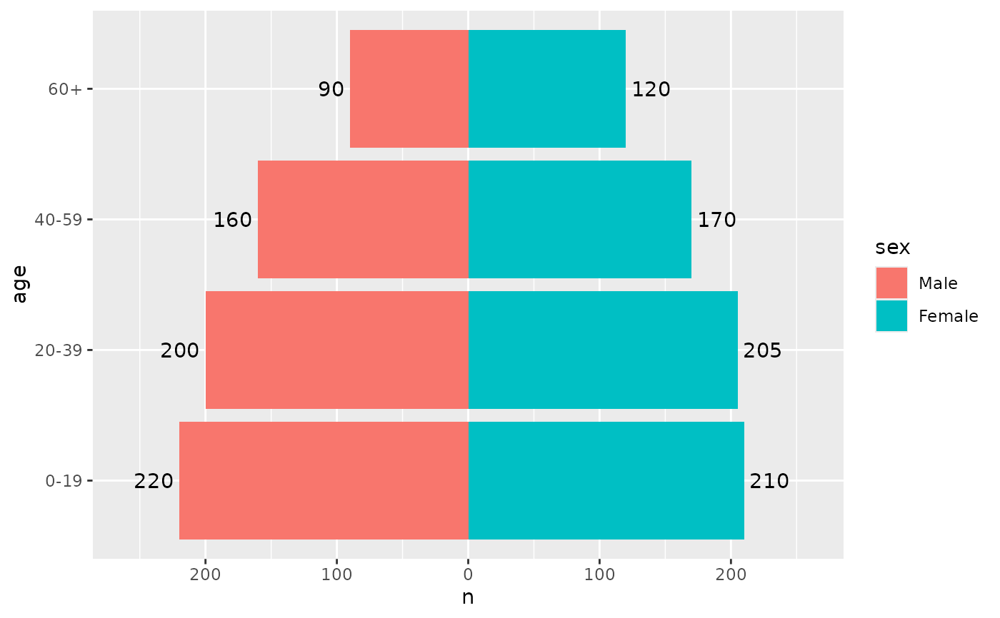
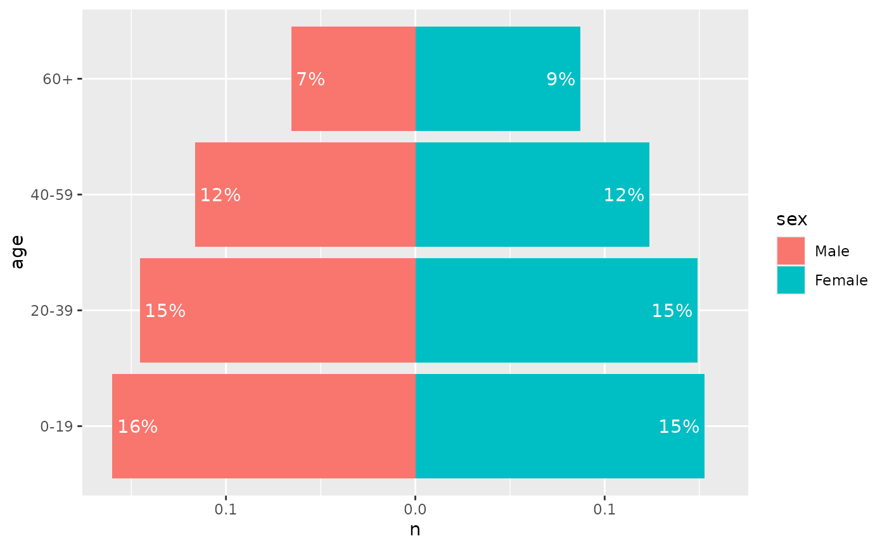

geom_pyramid_text() writes a label at the end of each bar of a pyramid.
It aggregates the data in the same way as geom_pyramid(), so the labels
show the counts, or the proportions when denominator is set, without
further mapping. Labels on the left side are justified towards the left,
so they sit outside (or inside) the bar on both sides.
Usage
geom_pyramid_text(
mapping = NULL,
data = NULL,
stat = "pyramid",
position = "pyramid",
...,
denominator = NULL,
place = c("outside", "inside"),
padding = 1,
labels = NULL,
parse = FALSE,
check_overlap = FALSE,
size.unit = "mm",
na.rm = FALSE,
orientation = NA,
show.legend = NA,
inherit.aes = TRUE
)Arguments
- mapping
Set of aesthetic mappings created by
aes(). If specified andinherit.aes = TRUE(the default), it is combined with the default mapping at the top level of the plot. You must supplymappingif there is no plot mapping.- data
The data to be displayed in this layer. There are three options:
If
NULL, the default, the data is inherited from the plot data as specified in the call toggplot().A
data.frame, or other object, will override the plot data. All objects will be fortified to produce a data frame. Seefortify()for which variables will be created.A
functionwill be called with a single argument, the plot data. The return value must be adata.frame, and will be used as the layer data. Afunctioncan be created from aformula(e.g.~ head(.x, 10)).- stat
The statistical transformation to use on the data for this layer. The default,
"pyramid", isstat_pyramid().- position
A position adjustment. The default,
"pyramid", isposition_pyramid(), which places each label at the outer end of its bar. Labels follow the side set bycoord_pyramid(left = ...); a position given to the bars should be given to the labels as well.- ...
Other arguments passed on to
ggplot2::layer(), such as fixed aesthetics likesize = 3orcolour = "grey30".- denominator
NULL(the default) shows counts."total"shows each bar as a proportion of all rows in the panel, and"side"as a proportion of the rows on its side.- place
Where to draw the labels:
"outside"the end of the bar, or"inside"it.- padding
The distance between the label and the end of the bar, in millimetres.
- labels
A function that formats the labels, such as
scales::label_comma()orscales::label_percent(), orNULLto show them as they are. A formula such as~ round(.x)is converted withrlang::as_function().- parse
If
TRUE, the labels will be parsed into expressions and displayed as described in?plotmath.- check_overlap
If
TRUE, text that overlaps previous text in the same layer will not be plotted.check_overlaphappens at draw time and in the order of the data. Therefore data should be arranged by the label column before callinggeom_text(). Note that this argument is not supported bygeom_label().- size.unit
How the
sizeaesthetic is interpreted: as millimetres ("mm", default), points ("pt"), centimetres ("cm"), inches ("in"), or picas ("pc").- na.rm
If
FALSE, the default, missing values are removed with a warning. IfTRUE, missing values are silently removed.- orientation
The orientation of the layer. The default (
NA) automatically determines the orientation from the aesthetic mapping. In the rare event that this fails it can be given explicitly by settingorientationto either"x"or"y". See the Orientation section for more detail.- show.legend
logical. Should this layer be included in the legends?
NA, the default, includes if any aesthetics are mapped.FALSEnever includes, andTRUEalways includes. It can also be a named logical vector to finely select the aesthetics to display. To include legend keys for all levels, even when no data exists, useTRUE. IfNA, all levels are shown in legend, but unobserved levels are omitted.- inherit.aes
If
FALSE, overrides the default aesthetics, rather than combining with them. This is most useful for helper functions that define both data and aesthetics and shouldn't inherit behaviour from the default plot specification, e.g.annotation_borders().
Aesthetics
label defaults to the value the bars show, after_stat(count) or
after_stat(prop), and can be mapped to anything else. The horizontal and
vertical justification are set by place and the text angle, so a mapped
or fixed hjust or vjust is replaced. The other aesthetics are those of
ggplot2::geom_text().
The justification and padding follow the orientation of the data, so
ggplot2::coord_flip() puts them on the wrong axis. For a vertical pyramid,
map age to x instead.
See also
geom_pyramid() for the bars.
Examples
library(ggplot2)
pop <- data.frame(
age = factor(rep(c("0-19", "20-39", "40-59", "60+"), 2)),
sex = factor(rep(c("Male", "Female"), each = 4), c("Male", "Female")),
n = c(220, 200, 160, 90, 210, 205, 170, 120)
)
p <- ggplot(pop, aes(x = n, y = age, fill = sex)) +
coord_pyramid()
p +
geom_pyramid() +
geom_pyramid_text() +
scale_x_continuous(expand = expansion(mult = 0.15))

# Percentages inside the bars
p +
geom_pyramid(denominator = "total") +
geom_pyramid_text(
denominator = "total",
place = "inside",
labels = scales::label_percent(accuracy = 1),
colour = "white"
)
